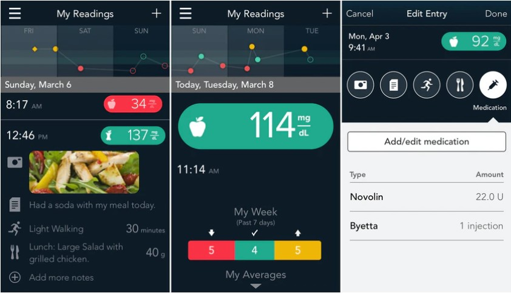

How Does IDEO Change the Lives of Others Using Design Thinking?
By Lauren Gilmore
About
IDEO are a global design company first established in 1976 in Palo Alto, California and started calling themselves IDEO in 1991. They use design and technology to create a positive impact on the world. They are known for their human-centred design and interdisciplinary team with versatile skills. They are strong advocates of design thinking and they practice and apply this to problem solve. They work hard with clients to teach them how to thrive in today’s world of digital experiences and running their business.
They have over 700 members of staff with skills ranging from designers to behavioural scientists. They have studios in North America, Europe and Asia. I focused my essay on this company as I wanted to look further into their work as it is very inspiring.
Design Thinking
Design thinking is the prime focus of what IDEO as a company believes in. Design thinking is all about having a human centred approach while exploring the endless opportunities with technology and effectively running a business. It can be incorporated into many different fields, which is important as IDEO have such a huge team of people with different skillsets. To list some, these include, designers, behavioural scientists, graphic designers, architects, engineers, entrepreneurs and researchers.
They believe in having a “beginners mind” which involves being open to learning new things and not assuming that you know everything. This is something I learnt early on in my design journey because the world of design and technology is continually evolving. Therefore, it is important to keep up with it and learn new things.
During the design thinking process, its important to understand the user’s needs. I think this can be done through extensive research and considering how people will interact with the design. It also involves going through a lot of trial and error and not being afraid of failing and trying again. Doing this and “thinking outside the box” to problem solve can help produce more effective solutions. IDEO have proved the effectiveness of design thinking through their many successful projects.
I decided to create a visual of the design thinking process:

The work of IDEO
Through using design thinking and a human centred approach, IDEO have been able to answer some of the biggest questions from business, government, educational and social organisations. They work hard with clients to teach them how to thrive in today’s world of digital experiences and running their business. IDEO have done endless lifechanging projects around the world.
“A digital first diabetes management system that helped patients get the support they needed when they needed it.” -Ascensia Diabetes Care
IDEO were approached by Ascensia Diabetes Care to create an extensive digital system that would help people manage their diabetes. I decided to look further into this project because diabetes affects huge amounts of people and it would be interesting to find out how the power of design could help people live a happier, healthier life.
There were many issues around this subject that IDEO wanted to solve. For example, there is lack of trusted information for those with diabetes. “As little as 15% of people with diabetes receive adequate education from their healthcare providers on managing their disease and making recommended lifestyle changes.” I think IDEO were perfect to take on this project with their unique and effective approach to design.
In 2016 IDEO worked with Ascensia to develop their “CONTOUR NEXT ONE blood glucose meter and CONTOUR DIABETES app”. They designed this together to enable people to gain more control over their diabetes and health. This app allowed people to upload blood glucose levels onto the app. Not only did it give feedback immediately, but it has a “smartLIGHT” feature which lets the patient know effortlessly if they are within a safe range using a red, green or yellow system.

I think the ease of use as well as the look and feel of this application will be motivating for diabetes patients to take control of their health. On top of the consistent layout, colour pallet and visual aesthetics, you can see a lot of thought and research has been put into the layout and content, so it is most effective for those it is helping.
“Putting the patient at the center of everything we create is what Ascensia Diabetes Care is all about. Collaborating with IDEO over the past few years is an excellent example of working with a strategic partner to address the needs of people with diabetes through innovation.”-Jazz Panchoo, Head of Global Strategy and Connected Solution, Asensia Diabetes Care
In 2017, IDEO was approached again by Ascensia who wanted to evolve further and go “beyond physical devices” and “consider all factors that impact a person’s health”. The idea was to create an app which was tailored to meet every individual’s unique needs. To do this, every user receives a personalised program from a Certified Diabetes Educator who they could chat to at any time. The app itself was also personalised through data and tracking to provide instant feedback and allowed users to track their progress.
When designing, testing the product is very important. This helps track down any issues, makes sure it is easy to use and effective. To do this, it was tested on 60 people, team members from IDEO also used the product themselves. It was very successful in fact, “one recently widowed 70-year-old woman emerged from depression, returned to swimming and started having regular blood sugar readings”. It is results like this that really inspire me to evolve as a designer so I can help people like this and improve the lives of others through design.
Human-Centred Design
Human-centred design is the “backbone” of the work at IDEO. I decided to look further into what it is and what the process involves as I feel I can take this knowledge on board for my own designs. So, what is human centred design? It’s in the name; it is all about keeping the needs of the people you are designing for at the centre focus.
If you design from their perspective, you can have empathy and a better understanding of their needs so you can produce a good outcome. This is known as the “inspiration phase”. Next, is the “ideation phase”. This involves problem solving, a lot of trial and error and observing how people interact with the design. This leads to improving on what you have created. With human-centred design, every person who could potentially use the design must be taken into consideration. This means taking usability into account and making it accessible, whether that be for disabilities, language barriers etc. I think that not only will this attract a larger audience to what IDEO are creating but being inclusive will give the company a good reputation and a trust factor. The last step is “implementation” and putting the solution out there to be used. I think this is one of the reasons IDEO have been so successful because they keep people as the key focus in their designs.
People
Tim Brown

Tim Brown joined IDEO in 1987 and is now executive chair of IDEO. His responsibility is deciding what IDEO should focus on to set them up for the future and organising how the team should be approaching their work. With his help, IDEO have made progress in introducing design thinking to multiple sectors including, education, health, government, technology, the social sector and business. This has enabled these sectors to explore new ideas and ways of solving problems. He has spread the word of design thinking and the value it has to designers and business owners worldwide about the value it can bring to a business.
David Kelley

Kelley is founder of IDEO. He has contributed massively to human-centred design methodology and design thinking. He first created IDEO as he wanted to work in a creative environment. He wrote a book called “creative confidence” as he has a passion for revealing creative confidence in students and businesses. He believes that everyone has the potential to be creative.
The book involves “principles and strategies that allow us to tap into our creative potential in our work lives, and in our personal lives.” After reading more about this, it has inspired me because I think a lot of people can struggle when they hit a creative block and this book could greatly improve people’s confidence.
Sandy Speicher
Speicher joined IDEO in 2004 and is the CEO. She is highly skilled in designing large scale systems. She is well known for working with Innova schools where she designed a school system in Peru. Using a progressive learning model, herself and IDEO created a whole new system of schools. They transformed the curriculum, teacher training and even the buildings themselves.
Their goal was to provide quality education at an affordable price. They have managed to achieve this and change the lives of thousands of people using the design thinking approach. I think this will have drastically improved the quality of the education in a developing country like Peru. It will have opened many opportunities for the students that they may have never had before. In 2019, Innova had grown to 42 schools and it has been an inspiration to other countries. This is only one of the many projects Speicher has been part of and I find her work very inspirational.